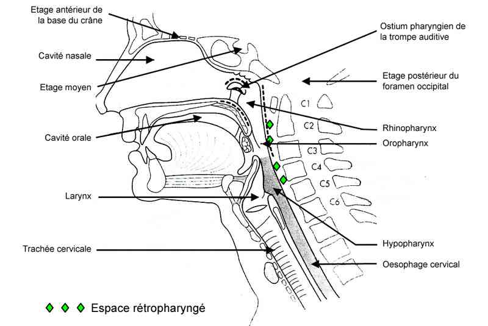
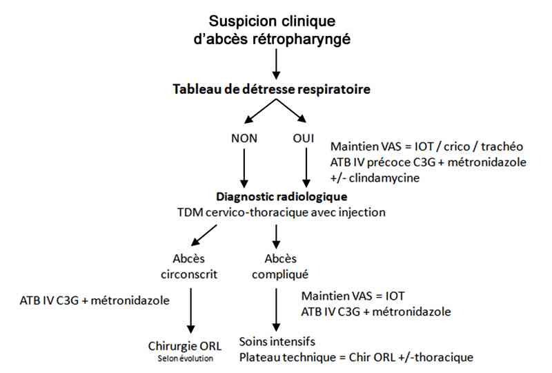

Bienvenue Sur Medical Education
Abcès rétropharyngé
Spécialité : infectieux / orl /
Points importants
-
Affections rares chez adulte
-
Diagnostic difficile
-
Risque d'extension aux espaces et structures de voisinage cervico-thoraciques
-
Morbi-mortalité importante (en cas de complications, 40 - 50% décès)
-
Priorité thérapeutique = maintien liberté des voies aériennes supérieures
-
Attention aux AINS en cas de varicelle et dans les infections dentaires et ORL
Présentation clinique / CIMU
CONTEXTE
Présentation clinique / CIMU
CONTEXTE
Terrain
- Sexe masculin (53 - 55%)
- Age moyen 45 ans
Antécédents
- Récents = traumatisme pénétrant ou non (inhalation corps étranger, intubation orotrachéale), gestes endoscopiques, infection dentaire, ORL
- Anciens = diabétique, immunosuppression, insuffisance rénale chronique
- Allergique = pénicilline, ß-lactamines
Traitement usuel
- Traitement au long cours = immunosuppresseur, hypoglycémiant
- Récent = antibiotiques (doses / durée) - corticoïdes - AINS
Circonstances de survenue
- Traumatisme cavité buccale / pharynx (post intubation orotrachéale)
- Geste endoscopique
- Infection parodontale récente
- Infection ORL récente (pharyngite, angine / phlegmon amygdalien)
Facteur favorisants
- Prise médicamenteuse récente = AINS (surtout si varicelle), corticoïdes (augmente le risque de médiastinite)
- Immunodépression sous-jacente = diabète, néoplasie, HIV
- Mode de vie = tabagisme actif, alcoolisme
SIGNES FONCTIONNELS
Signes généraux
- Fièvre
Spécifiques / association des signes
- Douleur cervicale
- Mal de gorge - odynophagie - dysphagie
- Dyspnée inspiratoire
- Hypersialorrhée
- Trismus (atteinte muscles ptérygoïdes)
Signes de complications
- Respiratoires = tachypnée - polypnée
- Pneumopathie d'inhalation (par fistulisation abcès en regard du larynx)
- Abcès pulmonaire (secondaire à un embole septique)
Neurologiques
- Troubles de la conscience et/ou signes de localisation (abcès cérébraux ou thrombose carotidienne)
EXAMEN CLINIQUE
 _89 Espace rétropharyngé
Examen général
- Hyperthermie
- Examen général en rapport avec terrain sous-jacent (diabétique - immunodéprimé - alcoolisme)
Signes de gravité
- Stridor
- Trismus
- Hypersialorrhée
Examen spécifique
- Œdème ou asymétrie du cou
- Torticolis inflammatoire et/ou limitation des mouvements latéraux du cou (syndrome de Grisel = subluxation C1-C2)
- Inflammation cutanée cervicale - crépitation sous-cutanée
- Présence d'adénopathies cervicales (homolatérales)
-
Examen cavité buccale (attention examen à abaisse - langue) délicat avec aspiration à proximité (risque de décompensation respiratoire, vomique purulente) :
- tuméfaction médiane de la paroi pharyngée postérieure (37% cas)
- examen de la dentition (desmondontite)
Signes de complications locorégionales
- Cordon veineux jugulaire interne induré et inflammatoire (syndrome de Lemierre)
- Cellulite faciale
- Troubles de la conscience et/ou signes de localisation (abcès cérébraux ou thrombose carotidienne)
- Syndrome de compression médullaire (abcès épidural)
- Voix rauque (atteinte du nerf vague)
- Syndrome de Claude Bernard Horner = ptosis, myosis, énophtalmie (atteinte de la chaine sympathique cervicale)
- Troubles de la déglutition, dysarthrie, difficulté à l'élévation des épaules (atteinte des nerfs IX, X, XI, XII)
- Douleurs inflammatoires rachidiennes (ostéomyélite et arthrite)
Signes de complications générales
- Pics fébriles (thrombophlébite veine jugulaire interne et embole septique)
- Etat hémodynamique et signes de choc périphériques (choc septique)
- Examen cardio-vasculaire (recherche souffle cardiaque récent = endocardite bactérienne)
-
Evaluation de la fonction respiratoire :
- asymétrie auscultatoire (pneumopathie de contiguïté) - douleurs interscapulaires (médiastinite)
- état cutané thoracique en particulier emphysème sous-cutané, évocateur d'une atteinte médiastinale
- détresse respiratoire
Examen neurologique
- Conscience - signes de localisation)
EXAMENS PARACLINIQUES SIMPLES
- Systématique, température (attention à la prise préalable antipyrétiques)
-
En cas de complications :
- SpO2 si complications respiratoires
- Glycémie capillaire si terrain diabétique sous-jacent
CIMU
- Situation A : pas de signes de gravité = abcès circonscrit (tri 4)
- Situation B : présence d'un signe de complication (tri 2)
-
Situation C : signe de détresse respiratoire (tri 1)
Signes paracliniques
Situation A : pas de signes de gravité = abcès circonscrit
Situation B : présence d'un signe de complication
Situation C : signe de détresse respiratoire
BIOLOGIQUE
Situation A
- NFS (hyperleucocytose)
- CRP
- Hémocultures x 2
- Si possible, prélèvements microbiologiques locaux à la seringue (éviter les écouvillons)
- Ionogramme sanguin, créatinémie (recherche de désordres hydroélectrolytiques - fonction rénale)
- Si diabétique, Glycémie (décompensation diabétique)
- Hémostase, groupe sanguin, 1re et 2e déterminations - RAI (préthérapeutique)
Situations B / C
- Idem situation A
- + GDS artériels à l'air ambiant (acidose), lactates (hyperlactatémie)
IMAGERIE
Situations A, B et C
-
Gold standard = scanner cervico-thoracique avec injection :
- Hypodensité avec rehaussement périphérique en cas d'abcès circonscrit collecté
- Image de densité tissulaire, hétérogène si non collecté
-
Intérêts :
- bilan d'extension locorégionale
- pose d'indication opératoire (diamètre du plus petit axe du foyer infectieux > 15mm)
- pré-thérapeutique = voie d'abord +/- mode d'intubation
-
NB, intérêt IRM avec injection gadolinium si disponible
Diagnostic étiologique
Organismes en cause
- Streptocoque bêtahémolytique
- Streptococcus viridans
- Streptococcus anaérobie
- Staphlylococcus aureus, métiR, epidermidis
- Autres, rares = Klebsiella pneumoniae, Bacteroides, Bartonella henselae, Eikenella corrodens, Escherichia Coli, Prevotella, Mycobacterium tuberculosis
Inhalation corps étranger
Causes iatrogéniques
- Endoscopie récente (oesophagoscopie, bronchoscopie)
- Intubation orotrachéale
- Geste dentaire récent
Causes traumatiques
- Traumatisme de la cavité buccale ou du pharynx
- Traumatisme cervical pénétrant
Causes infectieuses
- Infection dentaire
-
Infection des voies aériennes supérieures
Diagnostic différentiel
Angine simple et phlegmon amygdalien
Epiglottite
Angioedème
Masses cervicales
-
Infectieuses :
- bactériennes (tuberculose, maladies d'inoculation)
- virale (CMV, EBV, HIV...)
- parasitaires (toxoplasmose...)
- thyroïdite
-
Tumorales :
- hématologiques (LH, LMNH, Leucémies)
- carcinome épidermoïde
- cancer thyroïdien
-
Inflammatoires :
- sarcoïdose
- connectivites
-
Toxiques
-
réaction médicamenteuse
-
réaction médicamenteuse
Traitement
Situation A : pas de signes de gravité = abcès circonscrit
Situation B : présence d'un signe de complication
Situation C : signe de détresse respiratoire
STABILISATION INITIALE
Objectif = maintien liberté des VAS
Situation B
- Oxygénothérapie (objectifs = SpO2 > 95% patient sain ou > 90% chez IRC)
-
Intubation orotrachéale ou nasotrachéale en cas :
- d'atteinte des VAS ou pulmonaire
- de non réponse à oxygène haute concentration
Situation C
- Corticoïdes en dose unique méthylprednisolone 1 mg/kg IV (risque de médiastinite)
- Intubation orotrachéale ou nasotrachéale en séquence rapide
- Facteurs prédictifs d'une intubation difficile : déviation trachéale, trismus, rigidité rachis cervical
TRAITEMENT MEDICAL
Situations A / B / C
-
Antibiothérapie IV, large spectre, probabiliste, instauration précoce (dès les prélèvements infectieux réalisés - situations B et C) :
- C3G ceftriaxone 1 à 2 g IV en 5 à 15 min
- + métronidazole 1 g en IV en 30 à 60 min par 500 mg
- ± clindamycine 600 mg en IV en 20 min (situations C ± B) - en cas d'insuffisance rénale, 300 mg
- en cas d'allergie pénicillines, fluoroquinolones lévofloxacine 500 mg en IVL en 60 min
-
Symptomatique :
- maintien hémodynamique = correction hypovolémie
- rééquilibration hydroélectrolytique - décompensation diabétique
- antipyrétiques ± antalgiques non dépresseurs respiratoires, paracétamol 1g IV
TRAITEMENT CHIRURGICAL
Situations A, B et C
- Incision et drainage par voie endobuccale
-
Indication (controversée - à discuter selon les intervenants locaux) :
- abcès collecté avec diamètre du plus grand axe du foyer infectieux supérieur à 15mm en TDM (situation A) : évacuation chirurgicale d'emblée
- abcès collecté / situation A = diamètre plus petit axe < 15 mm après contrôle imagerie, en absence d'amélioration des signes généraux et locaux après 72h de traitement antibiotique bien conduit
- abcès non collecté (situations B et C) : en l'absence d'amélioration clinique après 48 à 72h d'antibiothérapie IV
- Incision et drainage par voie endobuccale
Situation A / B
- Héparinothérapie préventive par HBPM chez l'adulte dans certaines situations à risque (infection à germes anaérobies tel que Fusobacterium Necrophorum, producteur de vitamine K à l'origine de phénomène de thrombophlébite)
MÉDICAMENTS
Situations A / B / C
-
Antibiotiques IV :
-
C3G ceftriaxone :
- 1 à 2 g IVL dans G5 ou NaCl 0,9% en 5 à 15 min
- 2 g par jour
-
+ nitro-imidazolés métronidazole :
- 1g soit 1 flacon (100 mL/ 500 mg) en IVL en 30 à 60 min, renouvelable 1 fois
- puis 500 mg / 6 heures
-
± lincosanides clindamycine :
- 600mg (1 ampoule/ 4mL), respecter dilution minimale de 6 mg/mL, sans dépasser un débit maximal de 30 mg/min en cas de signes toxiniques (situations C ± B)
- 600mg toutes les 8 heures
- en cas d'insuffisance rénale, diminuer les doses de moitié
-
C3G ceftriaxone :
-
En cas d'allergie aux bêtalactamines :
-
fluoroquinolones lévofloxacine (> 15 ans) 500 mg en IVL en 60 min :
- 1 flacon 500 mg/ 100 mL en IVL en 60 min
- 500 mg x 2 par jour
- + métronidazole 1 g en première dose puis 500 mg toutes les 6 heures
- ± clindamycine 600 mg toutes les 8 heures en cas de signes toxiniques
-
fluoroquinolones lévofloxacine (> 15 ans) 500 mg en IVL en 60 min :
Surveillance
Situation A : pas de signes de gravité = abcès circonscrit
Situation B : présence d'un signe de complication
Situation C : signe de détresse respiratoire
CLINIQUE
Situations A / B
- Paramètres vitaux (PA - FC - SpO2 - FR)
- Etat cutané cervical, pharynx (régression des signes locaux)
Situation C
- Paramètres vitaux (PA - FC - SpO2 - FR - ETCO2)
- Contrôle IOT - sédation
PARACLINIQUE
Situations A / B / C
- Suivi en fonction du terrain, de la glycémie capillaire chez diabétique
-
GDS / lactates selon situation clinique
Devenir / orientation
Situation A : pas de signes de gravité = abcès circonscrit
Situation B : présence d'un signe de complication
Situation C : signe de détresse respiratoire
CRITERES D'ADMISSION
Admissions pour situations A / B / C
-
Nécessité d'un plateau technique (ORL - soins continus - TDM) - transfert secondaire médicalisé par SAMU
- Situation A : service salle (ORL ou infectieux avec avis ORL)
-
Situation B / C : service soins intensifs - indication de drainage chirurgical posée par l'ORL
Mécanisme / description
L'espace rétropharyngé
- S'étend de la division viscérale du feuillet moyen du fascia cervical profond autour des muscles constricteurs du pharynx à la division du feuillet profond du fascia cervical profond en arrière. Il s'étend de la base du crâne à la bifurcation trachéale vers T2 où les divisions viscérale et du fascia cervical profond fusionnent
- Contient les lymphatiques rétropharyngés
- Communique latéralement avec l'espace parapharyngé, dont il peut être considéré comme le 3e compartiment médial
-
Se situe immédiatement en avant de l'espace prévertébral.
Algorithme
-
Algorithme : abcès rétropharyngé
 _90 Algorithme Algorithme : abcès rétropharyngé
Bibliographie
-
Alan D Murray, Deep Neck Infections, 2008 www.emedicine.com
-
Joseph H. Kahn, Retropharyngeal Abscess, 2008 http://emedicine.medscape.com/article/764421-overview
-
Recommandations pour la Pratique Clinique, Complications locorégionales des pharyngites, Société Française d'ORL et de Chirurgie de la Face et du Cou.2008
-
Abcès rétropharyngé révélateur d'un diabète : à propos d'un cas, L. Aderdour, R. Hassani, H. Nejmi, Annales d'Endocrinologie, volume 69, numéro 6, pages 526-529, (décembre 2008)
-
Les pathologies de la sphère ORL, Dr François Dufresne, MD, FRCPC, CSPQ, CCFP, ABEM, 25ème Congrès Scientifique de Médecine d'Urgence, AMUQ
-
Anatomie 3, ORL, Pierre Bonfils et Jean Marc Chevalier, Edition Flammarion
Auteur(s) : Camille WELSCH, Albéric GAYET